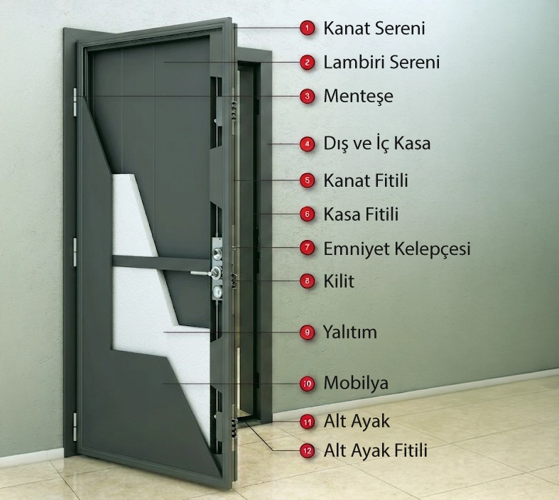

Daire giriş kapısı
Apartman dairelerinde güvenlik ve ses yalıtımı önceliğiyle tercih ediyoruz.
Bir kapının asıl sınavı sıradan günlerde değil; biri dışarıdan içeri girmeye çalıştığı o birkaç saniyede geçer. Biz de o saniyeyi düşünerek üretiyoruz.
Güvenlik
Bir kapının asıl sınavı, hiçbir şey olmadığı sıradan günlerde değil; birinin dışarıdan içeri girmeye çalıştığı o birkaç saniyede geçer. Emin Kapı olarak çelik kapı üretirken bu birkaç saniyeyi düşünüyoruz — kilit mekanizmasından kasa yapısına, sac kalınlığından menteşe yerleşimine kadar her detayı, evinizin veya işyerinizin ilk savunma hattı olacak şekilde kuruyoruz.
Dışarıdan bakınca tek parça gibi duran bir kapı aslında birkaç katmanın bir araya gelmesiyle oluşur. Biz o katmanları bilinçli seçiyoruz; çünkü güvenlik, ses ve görünüm aynı kapıda birlikte yaşamak zorunda.
Yapı
Katman katman kuruyoruz; her birinin ayrı bir işi var.
| Katman | İşlevi |
|---|---|
| Dış yüzey (çelik sac) | Darbeye ve zorlamaya karşı ilk direnç katmanı |
| İç dolgu | Ses ve ısı yalıtımını sağlar; kapıya ağırlık ve sağlamlık katar |
| İç yüzey (MDF panel + kaplama) | Estetik görünümü oluşturur — laminox, PVC kabartma veya ahşap desenli seçeneklerle |
| Kasa | Kapı kanadını duvara sabitleyen, kilitlenme noktalarını taşıyan yapı |

Seçenekler
Tadını beğendiğiniz görünümü, güvenliğini bildiğiniz bir iskelete oturtuyoruz.
| Model grubu | Öne çıkan özellik |
|---|---|
| Modern çelik kapı | Sade, düz yüzeyli; mat veya parlak seçeneklerle minimalist görünüm |
| Klasik çelik kapı | Kabartma detaylar ve işlemeli desenlerle geleneksel bir çizgi |
| PVC kabartma / laminox kaplı | Ahşap dokusunu taklit eden, bakımı kolay yüzey kaplaması |
| Komple metal | Tek renk veya çok renkli seçeneklerle sade, endüstriyel görünüm |
Kullanım
Apartman dairelerinde güvenlik ve ses yalıtımı önceliğiyle tercih ediyoruz.
Genellikle daha geniş ölçü ve özel tasarım talepleriyle üretiyoruz.
Ortak alan girişlerinde dayanıklılık ve düşük bakım ihtiyacı öne çıkıyor.
Yoğun kullanım gören iş yerlerinde sağlamlık ve sade tasarımı bir arada istiyoruz.
Yüzey
| Seçenek | Açıklama |
|---|---|
| Tek renk | Sade, minimalist bir dış görünüm |
| Çok renkli / desenli | Farklı panel bölümlerinde renk ve doku kontrastı |
| Ahşap desenli | Doğal ahşap görünümü, çelik kapının dayanıklılığıyla bir arada |
| Özel RAL renk | Talebinize göre özel renk seçeneği |
Teknik
Ölçü ve donanımı projeye göre netleştiriyoruz; aşağıda standart çerçevesimizi bulursunuz.
| Özellik | Değer |
|---|---|
| Kapı kanadı yapısı | Çelik sac dış yüzey + iç dolgu + MDF iç panel |
| Sac kalınlığı | İsteğe bağlı 1.2 mm veya 1.5 mm dekupe sac |
| Kasa yapısı | Proje ihtiyacına göre izolasyonlu veya standart kasa |
| Kilit sistemi | Detaylar için Çelik Kapı Kilitleri rehberimize bakın |
| Menteşe tipi | İhtiyaca ve projeye özel: yönsüz gizli menteşe, ayarlanabilir standart mil menteşe ve diğer ürünler |
| Yüzey kaplama | PVC kabartma, laminox, komple metal, ahşap desenli |
| Garanti süresi | Garanti Koşulları sayfamızla uyumlu şekilde belirlenir |
Hangi sistemin size uygun olduğunu keşifte konuşuyoruz. Yazılı özeti Çelik Kapı Kilitleri sayfasında toplayacağız.
Kapsam ve süre için Garanti Koşulları sayfamıza göz atın; sorularınızı da bize sorabilirsiniz.
SSS
Çelik kapılarda dış yüzeyde çelik sac kullanıyoruz; bu, kapıyı darbeye ve zorlamaya karşı diğer türlere göre belirgin şekilde daha dayanıklı kılıyor. Bu nedenle özellikle giriş kapılarında tercih ediyoruz.
Evet. İç dolgu katmanını bu amaçla tasarlıyoruz; dış ortamdan gelen ses ve ısı geçişini standart kapılara göre azaltıyor.
Evet. Standart ölçülerin dışında kalan giriş boşlukları için ölçünüzü bize iletmeniz yeterli; projeye özel üretim yapıyoruz.
Modern, klasik, PVC kabartma, laminox kaplı ve ahşap desenli seçeneklerin yanında özel RAL renklerinde de üretim yapabiliyoruz.
Evet. Çelik kapılarımız da Garanti Koşulları sayfamızda belirttiğimiz genel garanti şartlarımız kapsamındadır.
Keşif & teklif
Osmaniye ve çevresinde ücretsiz keşif — 09:00–17:00.